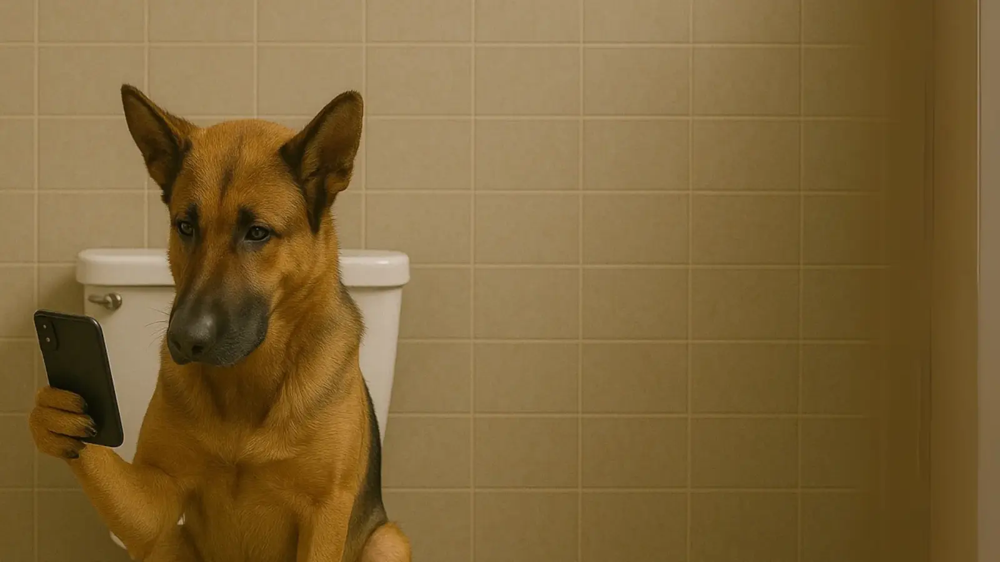

THEY POOP,
WE SCOOP
Trusted Pet Waste Removal for Downriver & All of Wayne County
- Locally owned
- No contracts
- Year-round
- Fully insured
Is this for your yard or your property?
For your yard
Your dog does the business. We handle the cleanup.
- One-time, weekly, bi-weekly or monthly
- You don't need to be home
- Year-round, snow or shine
For your property
Apartments, HOAs, parks and dog daycares. Fewer complaints, better curb appeal.
- Weekly, bi-weekly or custom schedules
- Uniformed, insured team
- Visit updates for your records, if you want them
How it works
Book your spot
Schedule online in about a minute, or give us a call.
We do the dirty work
We show up on your day and scoop the whole yard, so you don't have to lift a paw.
Enjoy a clean yard
Get back to fetch, cookouts and bare feet. No mess, just good times.
Wayne County dog owners love a clean yard
Clean yards, happy pets, zero hassle. Swipe for more.
Awesome professionalism. Awesome job. No complaints and would recommend 100%!Heather T.
They come once a week (always let me know beforehand) and do an AWESOME JOB! Not easy picking up after 4 dogs!Deborah M.
Great service and excellent communications. Great young man to have do the job weekly!Kristy T.
Devin is very quick, polite and professional. Would definitely recommend him for your doggy doo needs!Miyhana P.
They do an amazing job and the prices are incredible!Jacob H.
Very reliable, very professional, highly recommend!!Jeff B.
Good customer service. He does a great job!Veleisha B.
Are you in our zone?
If you're anywhere in Wayne County, you probably are. Type your city to check.
Downriver
- Allen Park
- Brownstown Township
- Ecorse
- Flat Rock
- Gibraltar
- Grosse Ile
- Huron Township
- Lincoln Park
- Melvindale
- River Rouge
- Riverview
- Rockwood
- Romulus
- Southgate
- Taylor
- Trenton
- Woodhaven
- Wyandotte
Rest of Wayne County
- Canton
- Dearborn
- Dearborn Heights
- Detroit
- Garden City
- Grosse Pointe
- Inkster
- Livonia
- Plymouth
- Redford
- Westland

Hi, I'm Devin.
I started Detroit Doo Disposal because Downriver needed a scooper you could count on. Every visit gets the same care, week after week. You're hiring a neighbor, not a faceless national chain.
More about DevinTrusted by local vets and animal shelters
- Southgate Animal Hospital
- Taylor Animal Shelter
- Wyandotte Animal Adoption Center

Ready to get your yard back?
Book online in about a minute. No contracts, no mess, no poop left behind.